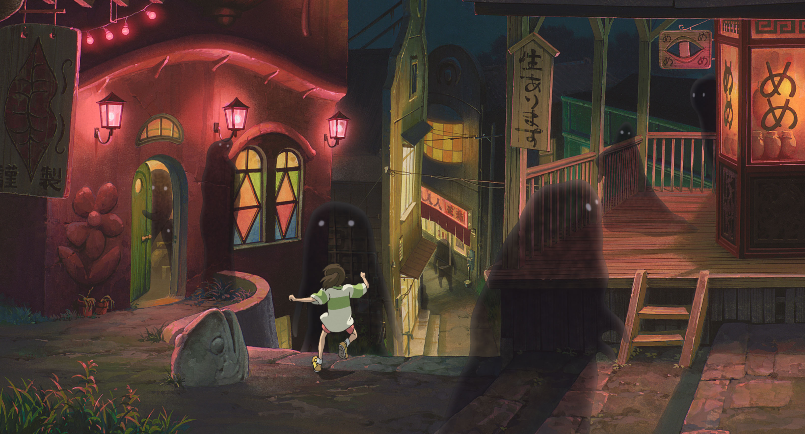

PortalBoo

Mengapa film animasi terbaik Jepang ini masih relevan hingga kini?
Kita tersesat di dunia magis memesona bersama Chihiro, anak perempuan 10 tahun, yang tersesat....

Mangaka Blue Lock Gambar Ilustrasi Kemenangan Jepang di Piala Dunia
Yusuke Nomura menggambar Isagi dengan keterangan, A historic victory! Go and get 'em, Japan!.
Santa Run Akan Kembali Ke Tokyo Bulan Desember Tahun Ini
3,300 yen untuk umum, 2,200 yen untuk mahasiswa dan 1,100 yen untuk siswa sekolah menengah pertama ke bawah.